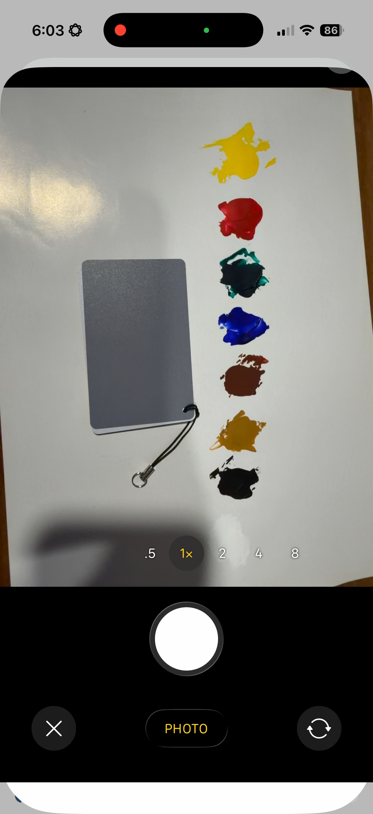
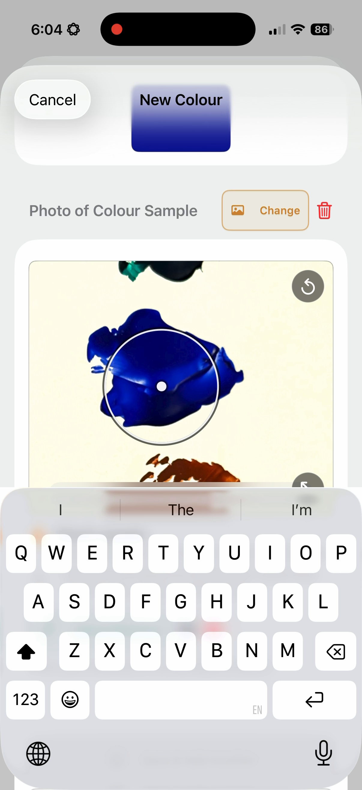

Start here
Quick start
- Choose a target from a photo or with the manual colour picker.
- Select a palette representing the real materials you can use.
- Review the suggested recipe and application guidance.
- Prepare a small mix and use Check Mix if it needs adjusting.
- Save the useful result as a Repair, standalone or inside a Job.

Getting useful results
Touch-Up Mixer helps you choose a sensible starting recipe for small colour-repair work.
Use the suggested recipe to prepare a small mix, let the material behave or dry as it will in use, then judge it where the repair will be seen. Lighting, sheen, texture, transparency, substrate and mixing technique all help shape the final adjustment.
Creating useful palettes
A palette represents the colours and medium in your repair kit. Better palette data gives the app a better basis for suggesting what to try.
Prepare physical swatches
- Make a clear swatch for each owned colour.
- Label it so you can identify the material later.
- Let it dry or settle appropriately.
- Photograph it in even light without strong glare or deep shadow.

Create the palette in the app
- Open palette management and create a palette.
- Name it and choose the material or medium.
- Add each colour, photograph or import its swatch and sample the painted area.
- Give each colour a clear name.

The app adjusts its mixing rules and guidance to suit the selected medium and opacity.
Choosing and sampling a target colour
You can choose a colour manually or sample it from a target photo. A photo is usually most useful when it is evenly lit, in focus and free of glare over the area you need to match.
Photo target markers
- Match area: the surrounding finish you want the repair to resemble.
- Repair area: the substrate or prepared area where transparent or translucent material will be applied.
- Ignore area: a distracting region that should not influence interpretation.
Move and resize the sample carefully. Avoid hardware, damage, reflections, deep shadow and unrelated colours unless they are deliberately part of the target.
Neutral references
If the photo contains a known white, grey or black reference, sample it to help compensate for colour cast and improve the starting point.

Reading mix suggestions
Recipes are practical starting points, generally shown in parts. For example, 3 parts to 1 part means using three times as much of the first colour as the second.
- Very close: a strong measured starting point.
- Close starting point: promising, but may need adjustment.
- Best available: the most plausible direction from the selected palette, outside the closer thresholds.
- Poor match: the selected palette cannot approach the target well.
Read the material-specific guidance as well as the colour recipe. Grain, transparency, layering, sheen and application method may be as important as the initial mix.

Adjusting with Check Mix
The suggested recipe is a starting point, and the first attempt will not always be right. Check Mix compares a photo of your in-progress mix with the target and suggests what to adjust next, helping you move closer to the colour you need.
- Prepare a small mix from the selected recipe.
- Apply a small amount to a suitable swatch or discreet area.
- Photograph it in lighting comparable to the repair.
- Place the sample circle over the actual mixed area, avoiding background and glare.
- Review the comparison and correction advice.
- Adjust, remix and check again when useful.
If the colour is not getting closer after several adjustments, it may be easier to start the mix again.

Saving and updating a Repair
A saved Repair keeps the target, palette choice, recipe, photo context, notes and optional before/after record together.
Use Save Repair when a new result is worth keeping. After it is saved, the control shows Repair Saved while nothing has changed. Changing the sample, recipe context or repair details changes the action to Update Repair.
Adding an after photo can prompt you to mark the Repair done. You can also change its done state later from the saved Repair.
Jobs, shared photos and exports
Repairs can remain standalone or be grouped into a Job with client, item and address details. Jobs help when several related repairs belong to the same piece of work.
- Create a Job from one or more standalone Repairs.
- Move Repairs between Jobs when the work changes.
- Add shared Job photos that provide context beyond one Repair.
- Open a Job photo viewer and swipe between its images.
- Export Repair or Job records when the relevant Pro tools are available.
Deleting a Job that contains Repairs lets you keep those Repairs as standalone or delete them with the Job.

Working with MadeGood
MadeGood is a separate iPhone app for organising before-and-after job photos. If you use both apps, MadeGood can send a before photo into Touch-Up Mixer as a linked Job and Repair.
- Accept the incoming MadeGood Repair when Touch-Up Mixer opens.
- Sample the target, choose a palette and develop the recipe.
- Save or update the Repair.
- Optionally add an after photo in Touch-Up Mixer.
- Mark the linked Repair done and choose whether to return it to MadeGood.
If there is no after photo yet, you can add one first or return the completed Repair without one. MadeGood can then capture the after and send it back into the same linked Repair.
The transfer is queued before the other app opens. If MadeGood does not open, the return remains available for its next launch.
Permissions, storage and privacy
Camera and Photo Library access support target sampling, Check Mix and saved photo records. Location is optional and is requested only when you choose to fill a Job address from the current location.
Repairs, Jobs, palettes, addresses, photos and notes are stored locally. Touch-Up Mixer has no account, analytics, tracking or automatic photo upload. Data leaves the app only when you choose an export or the local MadeGood handoff.
Free use and Touch-Up Mixer Pro
The free app supports the core sampling, palette, suggestion, Check Mix and standalone Repair workflow within its displayed limits. Current support limits are up to 5 saved Repairs, 2 palettes total and 6 colours per palette; bundled starter palettes count toward the palette total.
Touch-Up Mixer Pro is a one-time App Store unlock, not a subscription. It removes those limits and adds Jobs, shared Job photos, before/after image export, Repair and Job PDF export and bulk saved-work tools.
If Pro is missing after purchase, confirm the App Store Apple ID and use Restore Purchase in the app.
Troubleshooting
The camera or photo library will not open
Open iOS Settings, find Touch-Up Mixer and confirm Camera and Photos access.
A palette colour samples badly
Use a dry, evenly lit swatch; move the sample away from glare, labels, edges and background. Retake the photo when necessary.
The suggested recipe needs more adjustment
Confirm the correct palette and medium, then try the “Best available” direction and use Check Mix to refine it.
Check Mix gives repeated warnings
Check the sample circle, lighting, wet sheen and swatch texture. Resample or remix from a more suitable component if changes are not moving toward the target.
Save Repair is disabled
If it reads Repair Saved, the current Repair has not changed since the last save. Change a meaningful part of the Repair to enable Update Repair.
A MadeGood return did not open MadeGood
The return remains queued. Install or open MadeGood; it processes incoming work when it becomes active.
Pro does not appear
Check the Apple ID used for purchase and use Restore Purchase.
Glossary
- Target
- The colour you want the repair to approach.
- Match area
- The representative surrounding finish sampled from a target photo.
- Repair area
- The substrate beneath transparent or translucent repair material.
- Ignore area
- A region deliberately excluded from photo interpretation.
- Neutral reference
- A known white, grey or black reference used to reduce colour cast.
- Palette
- A saved set of real materials available to mix or apply.
- Parts
- Relative recipe proportions rather than fixed units.
- Check Mix
- The workflow for photographing and evaluating an in-progress mix.
- Repair
- A saved record of target, recipe and practical repair context.
- Job
- An optional group of related Repairs and shared photos.
Read the practical guide to matching a repair colour from a photo →